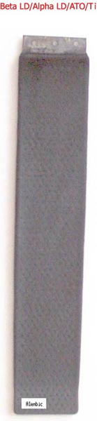

| Ti-SnO2-Lead Dioxide Anode |
The layer of Doped Tin Oxide is applied by painting on a fixed ratio solution of Tin and dopant compounds
that are thermally decomposed into the Oxides. A layer of Alpha Lead Dioxide is plated next using an alkali
Lead salt bath or perhaps a Lead Nitrate bath at a high current density. Next and lastly a Beta layer of Lead Dioxide is plated on top using a Lead Nitrate plating bath. The Alpha layer has better adherent properties that the Beta. It is also smoother and levels better. The Beta is better for exposure to the Chlorate or Perchlorate cell electrolyte as it wears less.
The substrate can be a drilled flat sheet of Ti. Mesh should be OK. Another possible alternative is to obtain a quantity of Ti welding rods.
They can be had from you local welding supplier as a special order or as a sample. You can then 'weave' the rods together to form a mesh with, say,
0.3 cm square holes, the mesh being the size of the Anode you want. You can weave more/less dense as you think fit. The Ti rods that are horizontal will play no part in taking current to the Anode, it all being done by the vertical rods.
The Ti must be surface treated before any coatings are applied by
degreasing, etching and (if possible) sandblasting.
It should be noted that certain Tin and Antimony compounds are toxic. This is especially true if you
attempt to make your own compounds from Tin and Antimony metals + acids.
The picture below shows an Anode made with a drilled 1mm thick Ti substrate. The small depressions on the
surface give an indication of the spacing of the holes which were 2.5mm diameter. The Anode measures 5 cm by 30 cm.

(In relation to the Anode)
The process that I finally settled upon is a bit laborious but I have had pretty consistent results:
I used Ti sheet of about 1mm thickness because that is what I had at the time. A little thicker would
probably be better.
The first step involves drilling the solid sheet full of small holes. I used a piece of perforated
stainless as a drilling guide/pattern. The holes then need to be de-burred or slightly countersunk to
get rid of the ragged edges left by the drilling step; I just used a larger diameter drill bit to do this.
The substrate should then be sandblasted, (to help the PbO2 adhere to it. The holes are needed for the
same reason) degreased with dish-washing soap, thoroughly rinsed in clean water and dried.
Next, a semiconducting coat of Sb doped SnO2 was applied by painting on a solution
of SnCl4 + SbCl3 in water + Butanol, drying, and then heating to 500°C or so in an oxidizing atmosphere i.e. air. This step was repeated five to ten times to give a
suitable coating thickness.
Then a thin (about 0.1mm) layer of Alpha PbO2 was plated onto the substrate from an
alkaline lead tartrate bath.
The final coat of beta PbO2 was then plated over top of this from a lead nitrate bath.
This layer was about 2mm thick.
The Anode performed well in a perchlorate cell.
The Anode above was only used for two batches of perchlorate, starting from NaClO3, which means that
it has seen about 200 hours of use at a current of 35-40 A. It still looks pretty much exactly the same.
I have made other Anodes (using the same process) that I've used in Chlorate cells for hundreds of hours
with no visible signs of wear.
The Alpha PbO2 layer was added in order to improve adhesion + uniformity of the final beta
PbO2 layer.
See US5683567 for a description of a very similar anode.
I used to always try and cut corners but after accumulating a whole lot of hazardous waste from failed
attempts I've come to realize that it is easier to do it properly, even if it is more work.
I chose the SnO2/Sb2O3 system because it is easy to apply
and the raw materials are easy to come by and above all cheap. SnO2 also has a higher
Oxygen overvoltage than PbO2 which supposedly means that any exposed SnO2
will not interfere with the Anodic formation of Perchlorate.
Some Patents that are relevant to the Ti substrate LD Anode are:
United States Patent 4040939 Tin + Antimony Oxides on Ti + Lead Dioxide.
United States Patent 5683567 Tin metal layer converted to conductive Tin Oxide
Layer + Lead Dioxide.
United States Patent 5545306 Uses a Lead metal layer on top of Ti. This Lead
Layer is oxidized to Alpha then plated with Beta in a Lead Nitrate bath.
GB Patent 850,380 Massive Anode using Ta as the plating substrate. See also JES February 1958 in further reading section for similar scheme.
When etched the Ti can be washed. Use distilled water or perhaps solvent. Do not use raw water as the Ti must be kept very clean at this stage. Keep the Titanium held in such a way so that the unetched (top) part is at the bottom so that no run-off comes from the unetched area onto the etched part. This caused streaks and may stop ATO from forming. Washing the etched Ti in clean 12% HCl and not drying (give it a shake and stop run-off from unetched part to etched part) before applying the ATO percursor has also been succussful at this stage.
Most sources dry the Ti at this stage.
| Hydrochloric Acid Solutions in Water | ||||||||||||
|---|---|---|---|---|---|---|---|---|---|---|---|---|
| Temperature in degrees Centigrade (°C) | ||||||||||||
| -5°C | 0°C | 10°C | 20°C | 40°C | 60°C | 80°C | 100°C | |||||
| Concentration (% Weight) | Density (kg/L) | |||||||||||
| 1 | 1.0048 | 1.0052 | 1.0048 | 1.0032 | 0.997 | 0.9881 | 0.9768 | 0.9636 | ||||
| 2 | 1.0104 | 1.0106 | 1.01 | 1.0082 | 1.0019 | 0.993 | 0.9819 | 0.9688 | ||||
| 4 | 1.0213 | 1.0213 | 1.0202 | 1.0181 | 1.0116 | 1.0026 | 0.9919 | 0.9791 | ||||
| 6 | 1.0321 | 1.0319 | 1.0303 | 1.0279 | 1.0211 | 1.0121 | 1.0016 | 0.9892 | ||||
| 8 | 1.0428 | 1.0423 | 1.0403 | 1.0376 | 1.0305 | 1.0215 | 1.0111 | 0.9992 | ||||
| 10 | 1.0536 | 1.0528 | 1.0504 | 1.0474 | 1.04 | 1.031 | 1.0206 | 1.009 | ||||
| 12 | 1.0645 | 1.0634 | 1.0607 | 1.0574 | 1.0497 | 1.0406 | 1.0302 | 1.0188 | ||||
| 14 | 1.0754 | 1.0741 | 1.0711 | 1.0675 | 1.0594 | 1.0502 | 1.0398 | 1.0286 | ||||
| 16 | 1.0864 | 1.0849 | 1.0815 | 1.0776 | 1.0692 | 1.0598 | 1.0494 | 1.0383 | ||||
| 18 | 1.0975 | 1.0958 | 1.092 | 1.0878 | 1.079 | 1.0694 | 1.059 | 1.0479 | ||||
| 20 | 1.1087 | 1.1067 | 1.1025 | 1.098 | 1.0888 | 1.079 | 1.0685 | 1.0574 | ||||
| 22 | 1.12 | 1.1177 | 1.1131 | 1.1083 | 1.0986 | 1.0886 | 1.078 | 1.0668 | ||||
| 24 | 1.1314 | 1.1287 | 1.1238 | 1.1187 | 1.1085 | 1.0982 | 1.0874 | 1.0761 | ||||
| 26 | 1.1426 | 1.1396 | 1.1344 | 1.129 | 1.1183 | 1.1076 | 1.0967 | 1.0853 | ||||
| 28 | 1.1537 | 1.1505 | 1.1449 | 1.1392 | 1.128 | 1.1169 | 1.1058 | 1.0942 | ||||
| 30 | 1.1648 | 1.1613 | 1.1553 | 1.1493 | 1.1376 | 1.126 | 1.1149 | 1.103 | ||||
| 32 | 1.1814 | 1.1763 | 1.1674 | 1.1593 | 1.1471 | 1.1359 | 1.1246 | 1.1126 | ||||
| 34 | 1.1929 | 1.1876 | 1.1781 | 1.1691 | 1.1566 | 1.1452 | 1.1339 | 1.1216 | ||||
| 36 | 1.2043 | 1.1988 | 1.1889 | 1.1789 | 1.1661 | 1.1544 | 1.1432 | 1.1305 | ||||
| 38 | 1.2156 | 1.21 | 1.1996 | 1.1885 | 1.1754 | 1.1635 | 1.1525 | 1.1393 | ||||
| 40 | 1.198 | |||||||||||